Formation Git
Qui a déjà vu ça ?
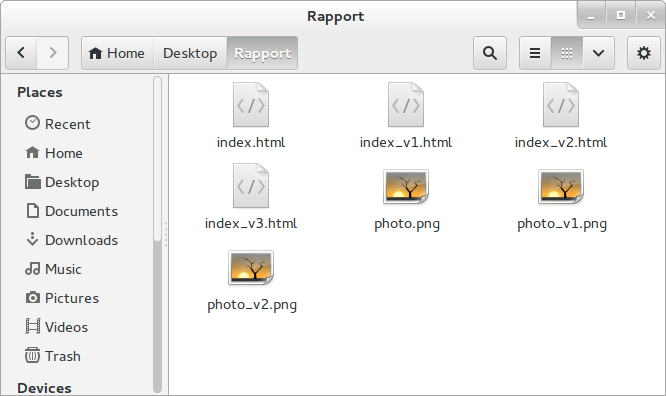...ou encore ça ?

...ou encore ça ?
La version la plus à jour est-elle Rapport.doc ou Rapport_VFinale.doc ?
...ou encore ça ?
La version la plus à jour est-elle Rapport.doc ou Rapport_VFinale.doc ?
La version 2-jd vient elle avant ou après la version 2 ?
...ou encore ça ?
La version la plus à jour est-elle Rapport.doc ou Rapport_VFinale.doc ?
La version 2-jd vient elle avant ou après la version 2 ?
... et si on avait aussi Rapport_VFinale1.doc et Rapport_VFinale2.doc (expérience vécue) ?
Qu'est-ce que GIT ??
Qu'est-ce que GIT ?
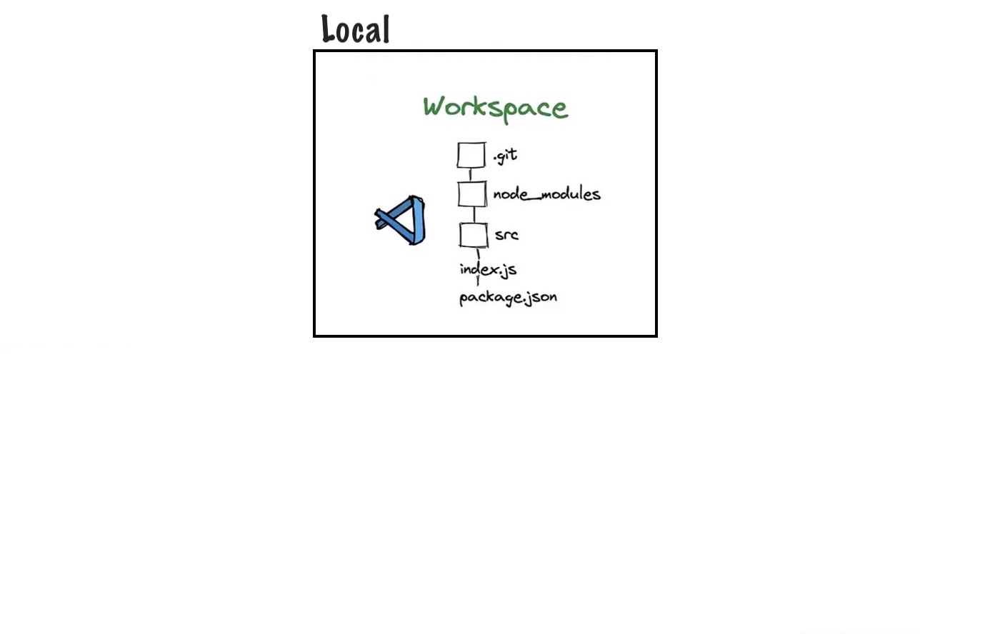Qu'est-ce que GIT ?
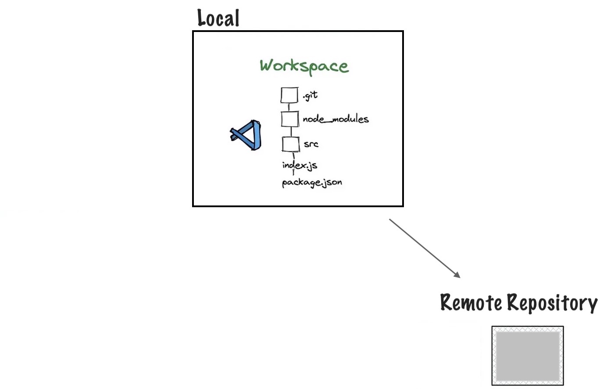Qu'est-ce que GIT ?
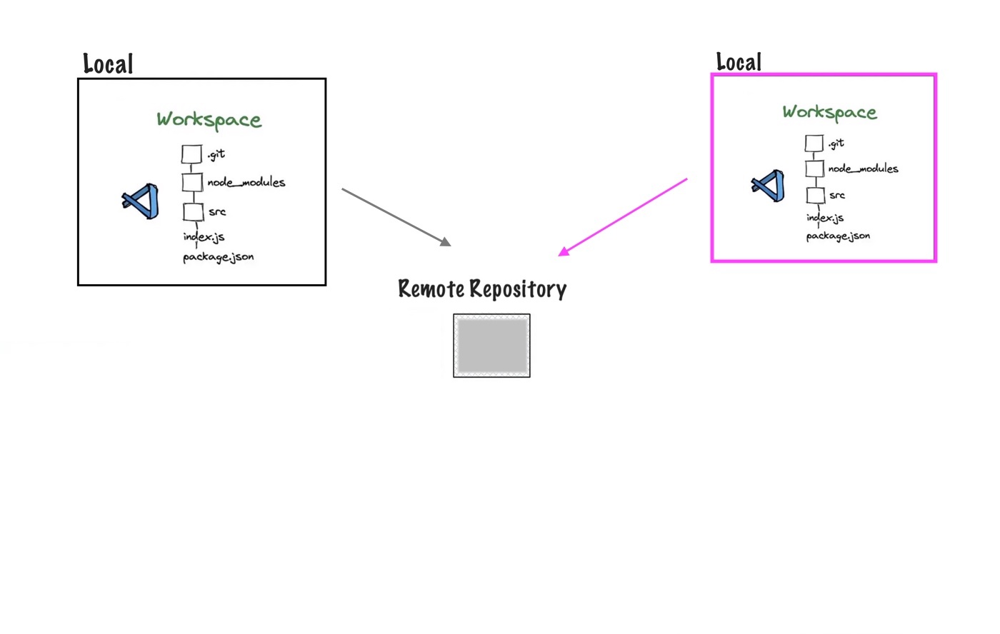Qu'est-ce que GIT ?
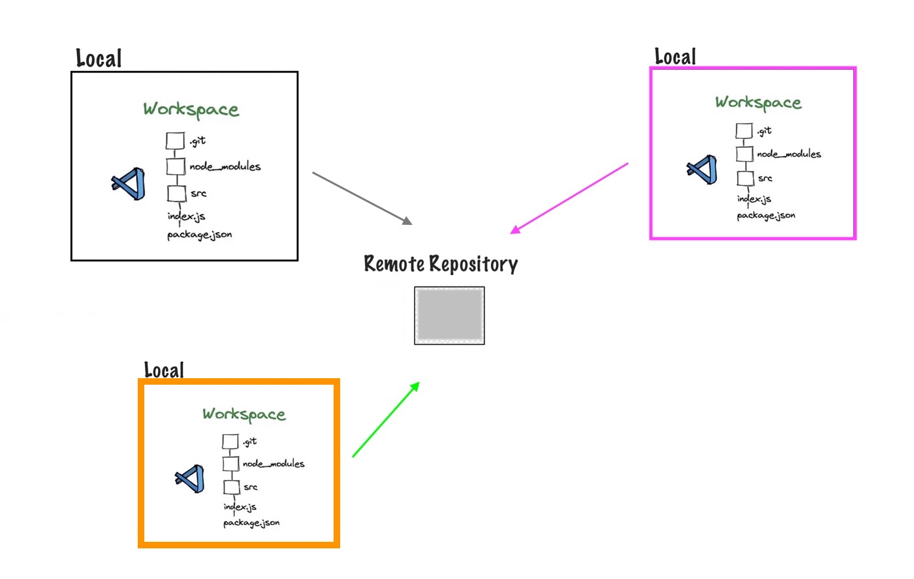Qu'est-ce que GIT ?
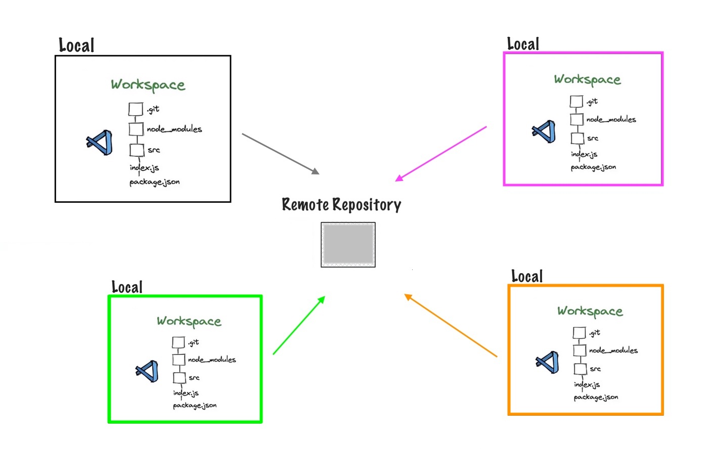Qu'est-ce que GIT ?
?
Qu'est-ce que GIT ?
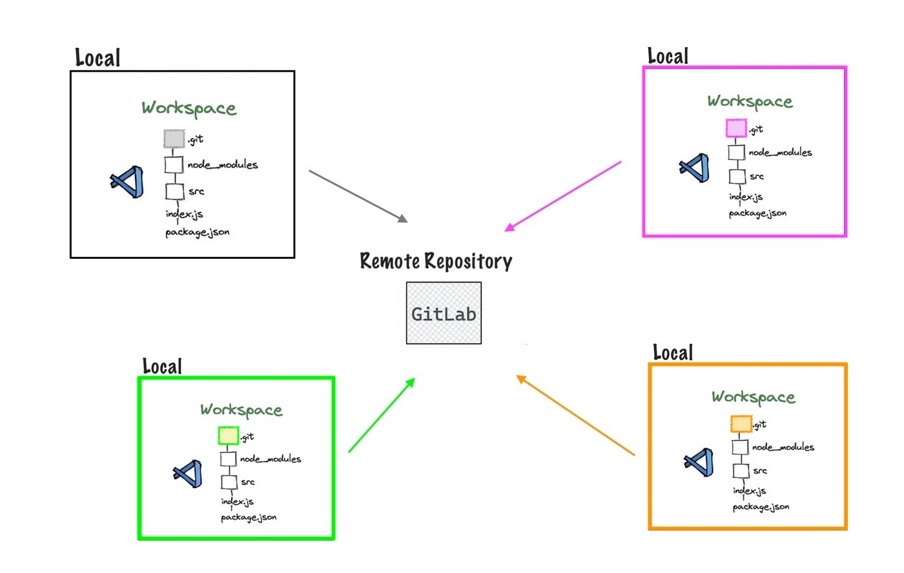Notions de base
Notions de base
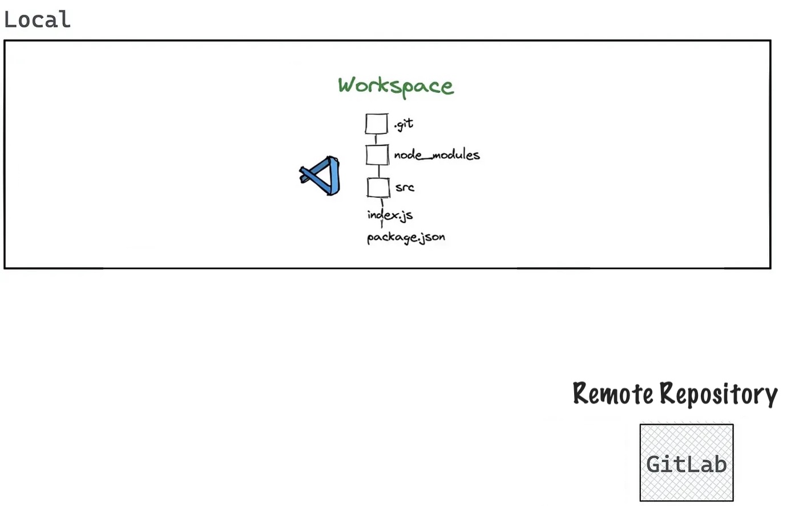Notions de base
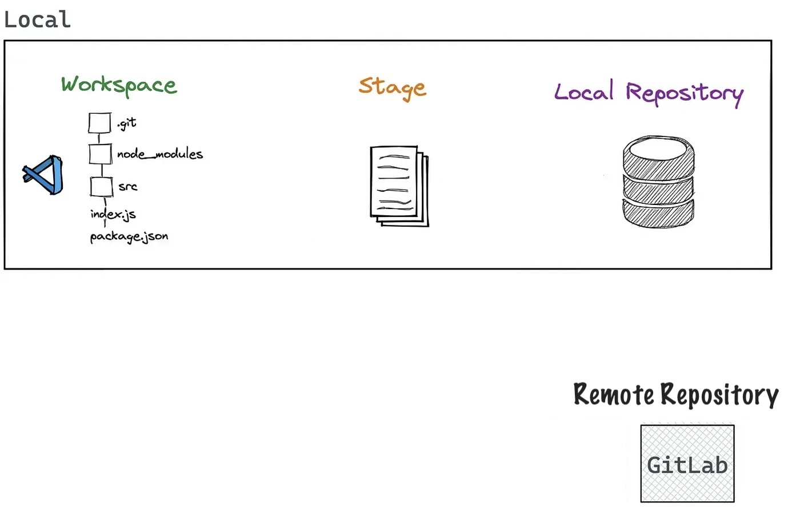Notions de base
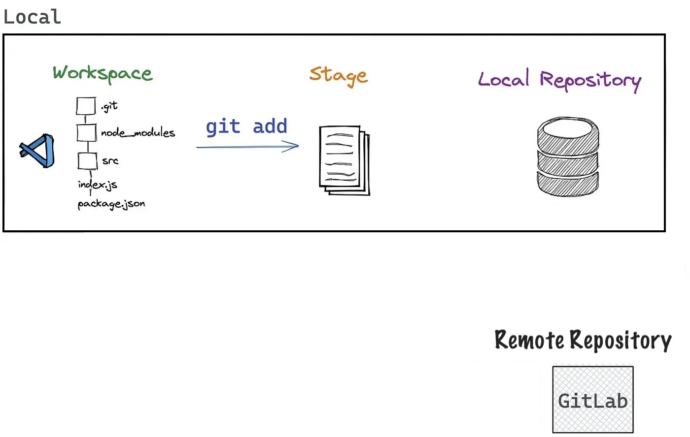Notions de base
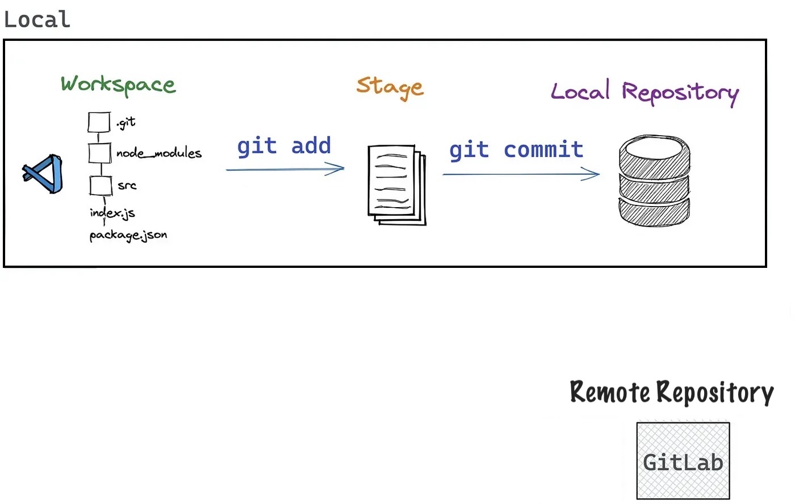Notions de base
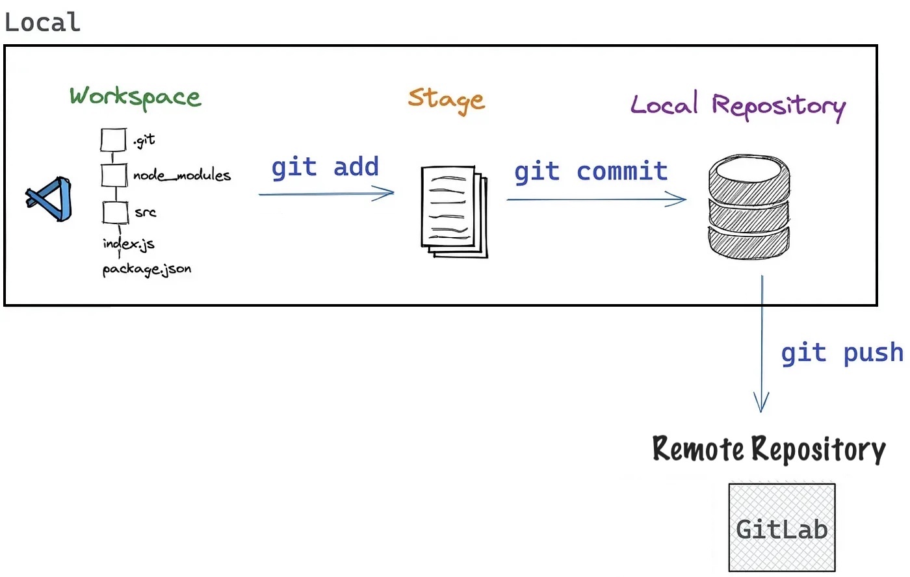Notions de base
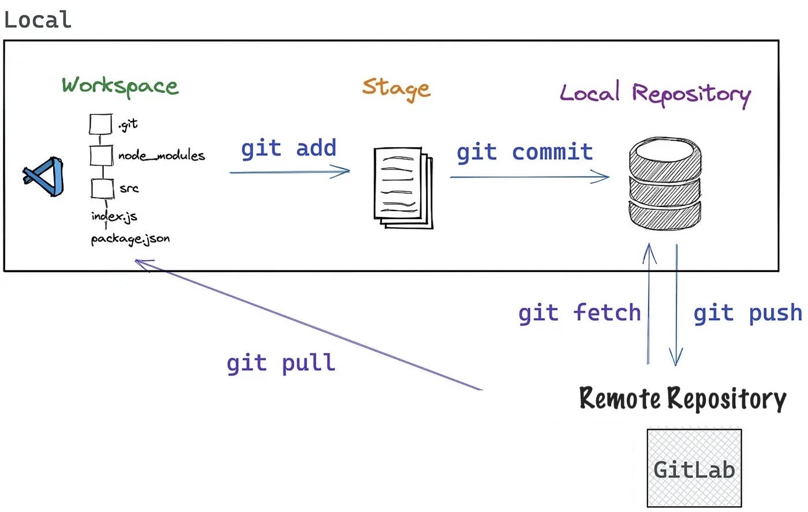Notions de base

Git Graph
Commits
Commits
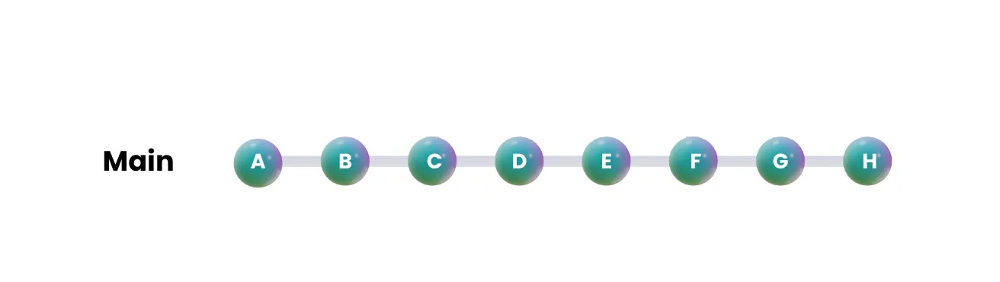Branches
Branches
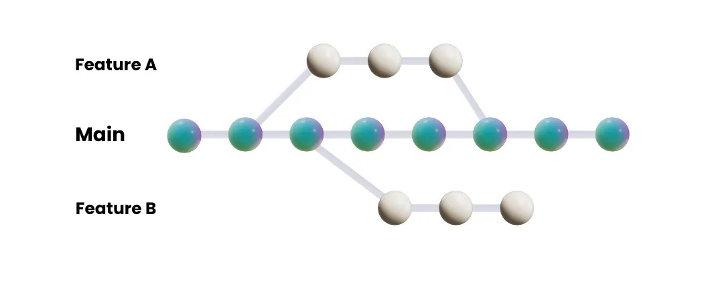Gitlab
Assez de théorie...
Passons à l'action !
Passons à l'action !
Rappel des Commandes
Rappel des Commandes
Liste de commandes 1/2
| . Action . | . Commande . |
|---|---|
| Copier le projet du repositoire remote | |
| Rajouter un fichier dans le stage | |
| Valider les modifications dans le repositoire local | |
| Envoyer les modifications au repositoire remote | |
| Mettre à jour le repositoire local | |
Liste de commandes 2/2
| . Action . | . Commande . |
|---|---|
| Créer une branche | |
| Changer de branche | |
| Merger une branche (Mieux le faire depuis GitLab) | |
| Status du repositoire | |
| Historique de la branche | |
| Changements | |